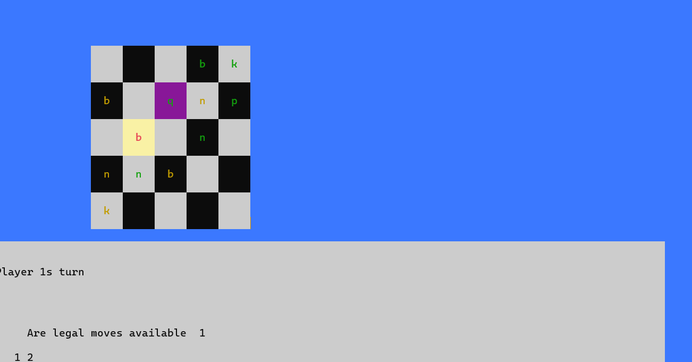

Languages
Python, C++, HTML, CSS, JavaScript
Student Developer Portfolio
I'm a Facility Manager for a public school district and a Game Development student at Full Sail University with a passion for programming, creative problem-solving, and building interactive experiences. My long-term goal is to develop educational software that makes learning more engaging, accessible, and personalized.
About Me
I've always enjoyed programming and figuring out how different systems work. What interests me about game development is the opportunity to turn that work into something people can actually interact with and experience. I'm currently working as a Facility Manager for a public school district while studying Game Development at Full Sail University. My experience in facility management has helped me develop my problem-solving, planning, and organizational skills, which I find are just as useful when working on programming projects. My long-term goal is to develop my own game engine. I'm also interested in educational software and how adaptive AI could be used to create more personalized learning experiences. One of my favorite parts of programming is taking an idea and figuring out how to make it work. I enjoy experimenting with different approaches and understanding why something works rather than just finding a solution. I especially enjoy seeing different systems come together to create something functional.
Python, C++, HTML, CSS, JavaScript
Visual Studio, Git, GitHub, Python IDLE
Object-oriented programming, debugging, input validation and program design
Featured Work

C++ Console Application
Chess Wars is a 5x5 variation of traditional chess where players can purchase their own pieces and choose where to place them before starting the game. I wanted to add another layer of strategy to chess by allowing players to build their own armies using a limited budget. The randomized drafting options also make each game a little different.
One of the biggest challenges that I ran into was getting the drafting system to handle incorrect inputs. Originally I was using cin, which worked fine until someone entered letters instead of numbers. This could cause the program to get stuck in a loop. I ended up switching to getline and stoi with try/catch to handle invalid inputs without breaking the program. That fixed the original problem, but then I had another issue with the console scrolling and writing over the drafting options. I eventually fixed that by using a function I created to set console posotion to keep the input and error messages in specific locations and clearing the old text before displaying anything new.